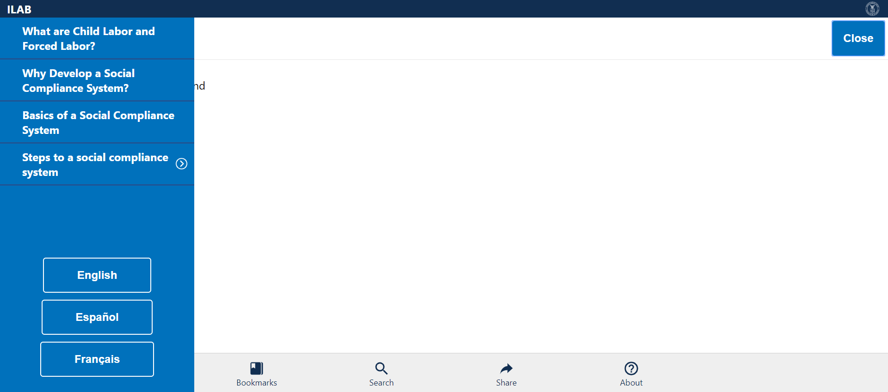
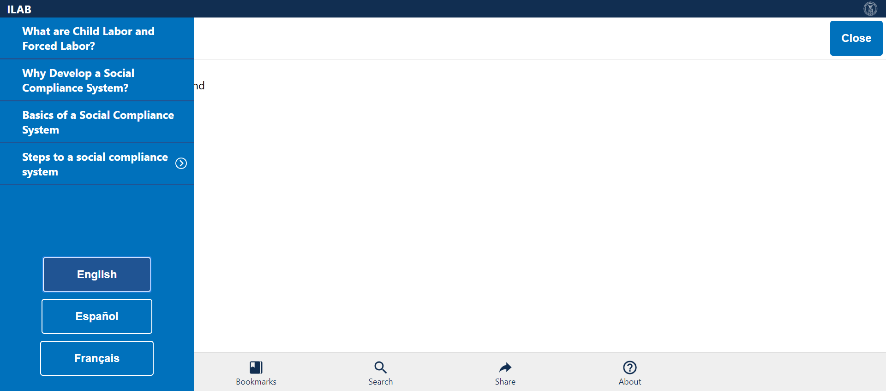
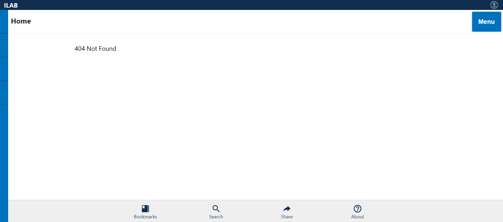
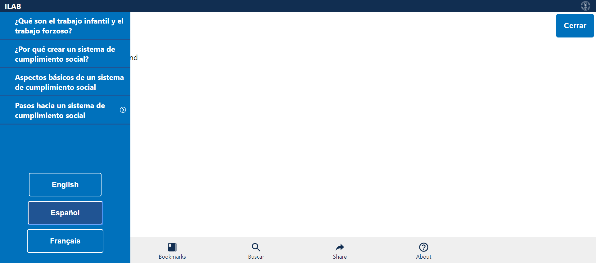
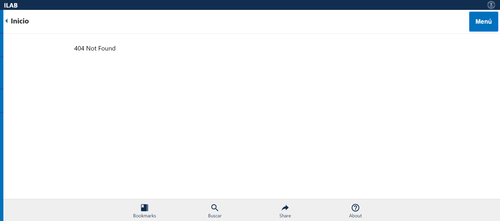
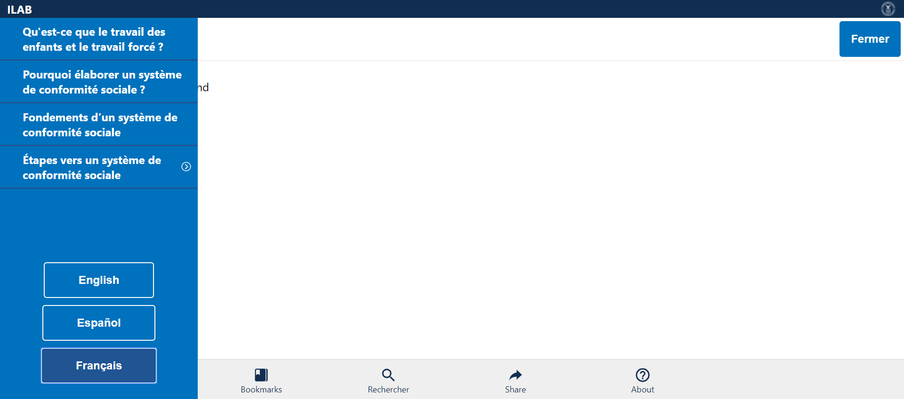
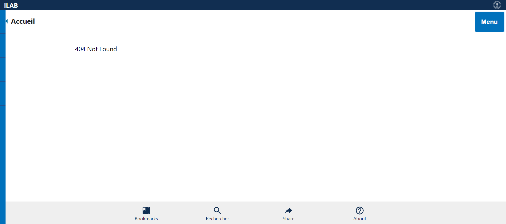
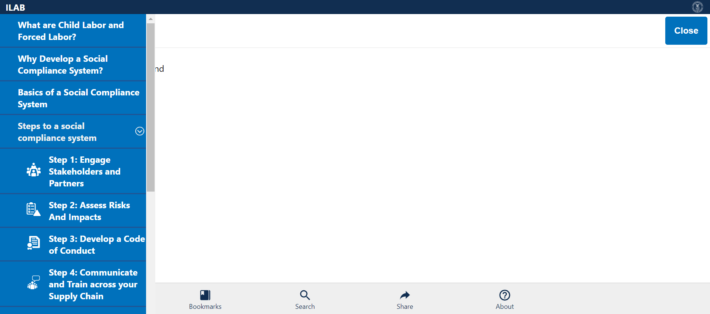
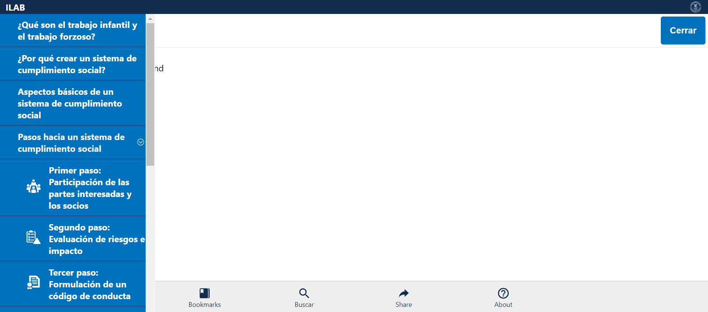
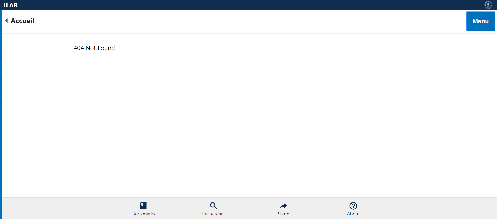

Tests
7 test(s) passed
3 test(s) failed, 0 others
Steps
192 step(s) passed
9 step(s) failed, 185 others
Tests
-
Verify Language Mar 12, 2019 12:17:08 PM passMar 12, 2019 12:17:08 PM Mar 12, 2019 12:17:13 PM 0h 0m 5s+585msVerify if the correct language is selected and displayed
Status Timestamp Details check_circle 12:17:08 PM Comply Chain Logo is Displayed info_outline 12:17:08 PM 
check_circle 12:17:08 PM ILAB is displayed info_outline 12:17:09 PM 
check_circle 12:17:09 PM MENU is Displayed info_outline 12:17:09 PM check_circle 12:17:10 PM MENU is opened Successfully info_outline 12:17:10 PM  check_circle 12:17:10 PM English Language Button is displayed info_outline 12:17:11 PM  check_circle 12:17:11 PM English Language is Selected and Validated from URL info_outline 12:17:11 PM check_circle 12:17:11 PM Español Language Button is displayed info_outline 12:17:12 PM 
check_circle 12:17:12 PM Español Language is Selected and Validated from URL info_outline 12:17:12 PM check_circle 12:17:12 PM Français Language Button is displayed info_outline 12:17:12 PM check_circle 12:17:13 PM Français Language is Selected and Validated from URL info_outline 12:17:13 PM check_circle 12:17:13 PM MENU is closed Successfully info_outline 12:17:13 PM check_circle 12:17:13 PM LanguagesVerification Test Case PASSED -
Verify Menu in English Mar 12, 2019 12:17:18 PM passMar 12, 2019 12:17:18 PM Mar 12, 2019 12:17:25 PM 0h 0m 6s+912msVerify Menu - Topics and Language Items in English
Status Timestamp Details check_circle 12:17:18 PM Comply Chain Logo is Displayed info_outline 12:17:19 PM 
check_circle 12:17:19 PM ILAB is displayed info_outline 12:17:19 PM check_circle 12:17:19 PM MENU is Displayed info_outline 12:17:19 PM check_circle 12:17:20 PM MENU is opened Successfully info_outline 12:17:21 PM check_circle 12:17:21 PM What are Child Labor and Forced Labor? link is displayed info_outline 12:17:21 PM check_circle 12:17:21 PM What are Child Labor and Forced Labor? link Verified info_outline 12:17:21 PM check_circle 12:17:21 PM Why Develop a Social Compliance System? link is displayed info_outline 12:17:22 PM 
check_circle 12:17:22 PM Why Develop a Social Compliance System? link Verified info_outline 12:17:22 PM check_circle 12:17:22 PM Basics of a Social Compliance System link is displayed info_outline 12:17:22 PM check_circle 12:17:22 PM Basics of a Social Compliance System link Verified info_outline 12:17:23 PM 
check_circle 12:17:23 PM Steps to a social compliance system is displayed info_outline 12:17:23 PM check_circle 12:17:23 PM Steps to a social compliance system Verified with Expandable Arrow Mark info_outline 12:17:24 PM 
check_circle 12:17:24 PM English Language Button is displayed and Verfied info_outline 12:17:24 PM check_circle 12:17:24 PM Español Language Button is displayed and Verfied info_outline 12:17:24 PM check_circle 12:17:24 PM Français Language Button is displayed and Verfied info_outline 12:17:25 PM  check_circle 12:17:25 PM MENU is closed Successfully info_outline 12:17:25 PM check_circle 12:17:25 PM MenuVerification_English Test Case PASSED -
Verify Menu in Español Mar 12, 2019 12:17:30 PM passMar 12, 2019 12:17:30 PM Mar 12, 2019 12:17:38 PM 0h 0m 7s+989msVerify Menu - Topics and Language Items in Español
Status Timestamp Details check_circle 12:17:30 PM Comply Chain Logo is Displayed info_outline 12:17:31 PM 
check_circle 12:17:31 PM ILAB is displayed info_outline 12:17:31 PM check_circle 12:17:31 PM Menú is Displayed info_outline 12:17:31 PM check_circle 12:17:34 PM Menú is opened Successfully info_outline 12:17:34 PM 
check_circle 12:17:34 PM ¿Qué son el trabajo infantil y el trabajo forzoso? link is displayed info_outline 12:17:34 PM check_circle 12:17:34 PM ¿Qué son el trabajo infantil y el trabajo forzoso? link Verified info_outline 12:17:34 PM check_circle 12:17:34 PM ¿Por qué crear un sistema de cumplimiento social? link is displayed info_outline 12:17:35 PM  check_circle 12:17:35 PM ¿Por qué crear un sistema de cumplimiento social? link Verified info_outline 12:17:35 PM check_circle 12:17:35 PM Aspectos básicos de un sistema de cumplimiento social link is displayed info_outline 12:17:35 PM check_circle 12:17:35 PM Aspectos básicos de un sistema de cumplimiento social link Verified info_outline 12:17:36 PM check_circle 12:17:36 PM Pasos hacia un sistema de cumplimiento social is displayed info_outline 12:17:36 PM check_circle 12:17:36 PM Pasos hacia un sistema de cumplimiento social Verified with Expandable Arrow Mark info_outline 12:17:37 PM 
check_circle 12:17:37 PM English Language Button is displayed and Verfied info_outline 12:17:37 PM check_circle 12:17:37 PM Español Language Button is displayed and Verfied info_outline 12:17:37 PM check_circle 12:17:37 PM Français Language Button is displayed and Verfied info_outline 12:17:38 PM  check_circle 12:17:38 PM Menú is closed Successfully info_outline 12:17:38 PM check_circle 12:17:38 PM MenuVerification_Español Test Case PASSED -
Verify Menu in Français Mar 12, 2019 12:17:43 PM passMar 12, 2019 12:17:43 PM Mar 12, 2019 12:17:51 PM 0h 0m 8s+291msVerify Menu - Topics and Language Items in Français
Status Timestamp Details check_circle 12:17:43 PM Comply Chain Logo is Displayed info_outline 12:17:43 PM 
check_circle 12:17:44 PM ILAB is displayed info_outline 12:17:44 PM 
check_circle 12:17:44 PM Menu is Displayed info_outline 12:17:44 PM check_circle 12:17:47 PM Menú is opened Successfully info_outline 12:17:47 PM 
check_circle 12:17:47 PM Qu'est-ce que le travail des enfants et le travail forcé ? link is displayed info_outline 12:17:47 PM check_circle 12:17:47 PM Qu'est-ce que le travail des enfants et le travail forcé ? link Verified info_outline 12:17:48 PM  check_circle 12:17:48 PM Pourquoi élaborer un système de conformité sociale ? link is displayed info_outline 12:17:48 PM check_circle 12:17:48 PM Pourquoi élaborer un système de conformité sociale ? link Verified info_outline 12:17:48 PM check_circle 12:17:48 PM Fondements d’un système de conformité sociale link is displayed info_outline 12:17:49 PM 
check_circle 12:17:49 PM Fondements d’un système de conformité sociale link Verified info_outline 12:17:49 PM check_circle 12:17:49 PM Étapes vers un système de conformité sociale is displayed info_outline 12:17:49 PM check_circle 12:17:50 PM Étapes vers un système de conformité sociale Verified with Expandable Arrow Mark info_outline 12:17:50 PM 
check_circle 12:17:50 PM English Language Button is displayed and Verfied info_outline 12:17:50 PM check_circle 12:17:50 PM Español Language Button is displayed and Verfied info_outline 12:17:51 PM  check_circle 12:17:51 PM Français Language Button is displayed and Verfied info_outline 12:17:51 PM check_circle 12:17:51 PM Menu is closed Successfully info_outline 12:17:51 PM check_circle 12:17:51 PM MenuVerification_Français Test Case PASSED -
Verify Steps in English Mar 12, 2019 12:17:56 PM passMar 12, 2019 12:17:56 PM Mar 12, 2019 12:18:09 PM 0h 0m 13s+17msVerify Step Items in English
Status Timestamp Details check_circle 12:17:56 PM Comply Chain Logo is Displayed info_outline 12:17:57 PM 
check_circle 12:17:57 PM ILAB is displayed info_outline 12:17:57 PM check_circle 12:17:57 PM MENU is Displayed info_outline 12:17:57 PM check_circle 12:17:58 PM MENU is opened Successfully info_outline 12:17:59 PM 
check_circle 12:17:59 PM What are Child Labor and Forced Labor? link is displayed info_outline 12:17:59 PM check_circle 12:17:59 PM What are Child Labor and Forced Labor? link Verified info_outline 12:17:59 PM check_circle 12:18:00 PM Why Develop a Social Compliance System? link is displayed info_outline 12:18:00 PM 
check_circle 12:18:00 PM Why Develop a Social Compliance System? link Verified info_outline 12:18:00 PM check_circle 12:18:00 PM Basics of a Social Compliance System link is displayed info_outline 12:18:01 PM 
check_circle 12:18:01 PM Basics of a Social Compliance System link Verified info_outline 12:18:01 PM check_circle 12:18:01 PM Steps to a social compliance system is displayed info_outline 12:18:01 PM check_circle 12:18:01 PM Steps to a social compliance system Verified with Expandable Arrow Mark info_outline 12:18:02 PM 
check_circle 12:18:02 PM Steps to a social compliance system Expanded info_outline 12:18:02 PM check_circle 12:18:02 PM Step 1: Engage Stakeholders and Partners is displayed info_outline 12:18:03 PM 
check_circle 12:18:03 PM Step 1: Engage Stakeholders and Partners is Verified info_outline 12:18:03 PM check_circle 12:18:03 PM Step 2: Assess Risks And Impacts is displayed info_outline 12:18:03 PM check_circle 12:18:03 PM Step 2: Assess Risks And Impacts is Verified info_outline 12:18:04 PM 
check_circle 12:18:04 PM Step 3: Develop a Code of Conduct displayed info_outline 12:18:04 PM check_circle 12:18:04 PM Step 3: Develop a Code of Conduct Verified info_outline 12:18:04 PM check_circle 12:18:05 PM Step 4: Communicate and Train across your Supply Chain displayed info_outline 12:18:05 PM  check_circle 12:18:05 PM Step 4: Communicate and Train across your Supply Chain Verified info_outline 12:18:05 PM check_circle 12:18:05 PM Step 5: Monitor Compliance is displayed info_outline 12:18:06 PM 
check_circle 12:18:06 PM Step 5: Monitor Compliance Verified info_outline 12:18:06 PM check_circle 12:18:06 PM Step 6: Remediate Violations displayed info_outline 12:18:06 PM check_circle 12:18:06 PM Step 6: Remediate Violations Verified info_outline 12:18:07 PM 
check_circle 12:18:07 PM Step 7: Independent Review displayed info_outline 12:18:07 PM check_circle 12:18:07 PM Step 7: Independent Review Verified info_outline 12:18:07 PM check_circle 12:18:08 PM Step 8: Report Performance displayed info_outline 12:18:08 PM check_circle 12:18:08 PM Step 8: Report Performance Verified info_outline 12:18:08 PM check_circle 12:18:08 PM Steps to a social compliance system Collapsed info_outline 12:18:09 PM 
check_circle 12:18:09 PM MENU is closed Successfully info_outline 12:18:09 PM check_circle 12:18:09 PM MenuVerification_English Test Case PASSED -
Verify Steps in Español Mar 12, 2019 12:18:14 PM passMar 12, 2019 12:18:14 PM Mar 12, 2019 12:18:28 PM 0h 0m 14s+301msVerify Step Items in Español
Status Timestamp Details check_circle 12:18:14 PM Comply Chain Logo is Displayed info_outline 12:18:14 PM 
check_circle 12:18:14 PM ILAB is displayed info_outline 12:18:15 PM 
check_circle 12:18:15 PM Menú is Displayed info_outline 12:18:15 PM check_circle 12:18:17 PM Menú is opened Successfully info_outline 12:18:18 PM 
check_circle 12:18:18 PM ¿Qué son el trabajo infantil y el trabajo forzoso? link is displayed info_outline 12:18:18 PM check_circle 12:18:18 PM ¿Qué son el trabajo infantil y el trabajo forzoso? link Verified info_outline 12:18:18 PM check_circle 12:18:18 PM ¿Por qué crear un sistema de cumplimiento social? link is displayed info_outline 12:18:19 PM 
check_circle 12:18:19 PM ¿Por qué crear un sistema de cumplimiento social? link Verified info_outline 12:18:19 PM check_circle 12:18:19 PM Aspectos básicos de un sistema de cumplimiento social link is displayed info_outline 12:18:20 PM 
check_circle 12:18:20 PM Aspectos básicos de un sistema de cumplimiento social link Verified info_outline 12:18:20 PM check_circle 12:18:20 PM Pasos hacia un sistema de cumplimiento social is displayed info_outline 12:18:20 PM check_circle 12:18:20 PM Pasos hacia un sistema de cumplimiento social Verified with Expandable Arrow Mark info_outline 12:18:21 PM  check_circle 12:18:21 PM Steps to a social compliance system Expanded info_outline 12:18:21 PM check_circle 12:18:21 PM Primer paso: Participación de las partes interesadas y los socios is displayed info_outline 12:18:22 PM 
check_circle 12:18:22 PM Primer paso: Participación de las partes interesadas y los socios is Verified info_outline 12:18:22 PM check_circle 12:18:22 PM Segundo paso: Evaluación de riesgos e impacto is displayed info_outline 12:18:22 PM check_circle 12:18:22 PM Segundo paso: Evaluación de riesgos e impacto is Verified info_outline 12:18:23 PM 
check_circle 12:18:23 PM Tercer paso: Formulación de un código de conducta is displayed info_outline 12:18:23 PM check_circle 12:18:23 PM Tercer paso: Formulación de un código de conducta Verified info_outline 12:18:24 PM 
check_circle 12:18:24 PM Cuarto paso: Comunicación y capacitación en la cadena de suministro is displayed info_outline 12:18:24 PM check_circle 12:18:24 PM Cuarto paso: Comunicación y capacitación en la cadena de suministro Verified info_outline 12:18:24 PM check_circle 12:18:24 PM Quinto paso: Vigilancia y seguimiento del cumplimiento is displayed info_outline 12:18:25 PM 
check_circle 12:18:25 PM Quinto paso: Vigilancia y seguimiento del cumplimiento Verified info_outline 12:18:25 PM check_circle 12:18:25 PM Sexto paso: Remediación de infracciones is displayed info_outline 12:18:25 PM check_circle 12:18:25 PM Sexto paso: Remediación de infracciones Verified info_outline 12:18:26 PM 
check_circle 12:18:26 PM Séptimo paso: Examen independiente displayed info_outline 12:18:26 PM check_circle 12:18:26 PM Séptimo paso: Examen independiente Verified info_outline 12:18:27 PM 
check_circle 12:18:27 PM Octavo paso: Notificación del desempeño is displayed info_outline 12:18:27 PM check_circle 12:18:27 PM Octavo paso: Notificación del desempeño Verified info_outline 12:18:27 PM check_circle 12:18:28 PM Steps to a social compliance system Collapsed info_outline 12:18:28 PM check_circle 12:18:28 PM Menú is closed Successfully info_outline 12:18:28 PM check_circle 12:18:28 PM MenuVerification_Español Test Case PASSED -
Verify Steps in Français Mar 12, 2019 12:18:33 PM passMar 12, 2019 12:18:33 PM Mar 12, 2019 12:18:47 PM 0h 0m 14s+229msVerify Step Items in Français
Status Timestamp Details check_circle 12:18:33 PM Comply Chain Logo is Displayed info_outline 12:18:34 PM 
check_circle 12:18:34 PM ILAB is displayed info_outline 12:18:34 PM check_circle 12:18:34 PM Menu is Displayed info_outline 12:18:34 PM check_circle 12:18:37 PM Menú is opened Successfully info_outline 12:18:37 PM 
check_circle 12:18:37 PM Qu'est-ce que le travail des enfants et le travail forcé ? link is displayed info_outline 12:18:37 PM check_circle 12:18:37 PM Qu'est-ce que le travail des enfants et le travail forcé ? link Verified info_outline 12:18:38 PM 
check_circle 12:18:38 PM Pourquoi élaborer un système de conformité sociale ? link is displayed info_outline 12:18:38 PM check_circle 12:18:38 PM Pourquoi élaborer un système de conformité sociale ? link Verified info_outline 12:18:38 PM check_circle 12:18:39 PM Fondements d’un système de conformité sociale link is displayed info_outline 12:18:39 PM check_circle 12:18:39 PM Fondements d’un système de conformité sociale link Verified info_outline 12:18:39 PM check_circle 12:18:39 PM Étapes vers un système de conformité sociale is displayed info_outline 12:18:40 PM 
check_circle 12:18:40 PM Étapes vers un système de conformité sociale Verified with Expandable Arrow Mark info_outline 12:18:40 PM check_circle 12:18:40 PM Steps to a social compliance system Expanded info_outline 12:18:40 PM check_circle 12:18:40 PM Première étape: faire participer les parties prenantes et les partenaires is displayed info_outline 12:18:41 PM 
check_circle 12:18:41 PM Première étape: faire participer les parties prenantes et les partenaires is Verified info_outline 12:18:41 PM check_circle 12:18:41 PM Deuxième étape: Évaluer les risques et les incidences is displayed info_outline 12:18:42 PM 
check_circle 12:18:42 PM Deuxième étape: Évaluer les risques et les incidences is Verified info_outline 12:18:42 PM check_circle 12:18:42 PM Troisième étape: élaborer un code de conduite is displayed info_outline 12:18:42 PM check_circle 12:18:42 PM Troisième étape: élaborer un code de conduite Verified info_outline 12:18:43 PM 
check_circle 12:18:43 PM Step 4: Quatrième étape: communiquer et former dans l'ensemble de votre chaîne d'approvisionnement is displayed info_outline 12:18:43 PM check_circle 12:18:43 PM Quatrième étape: communiquer et former dans l'ensemble de votre chaîne d'approvisionnement Verified info_outline 12:18:43 PM check_circle 12:18:44 PM Cinquième étape: Surveiller la conformité is displayed info_outline 12:18:44 PM 
check_circle 12:18:44 PM Cinquième étape: Surveiller la conformité Verified info_outline 12:18:44 PM check_circle 12:18:44 PM Sixième étape: Réparer les infractions is displayed info_outline 12:18:45 PM 
check_circle 12:18:45 PM Sixième étape: Réparer les infractions info_outline 12:18:45 PM check_circle 12:18:45 PM Septième étape: Examen indépendant is displayed info_outline 12:18:45 PM check_circle 12:18:45 PM Septième étape: Examen indépendant Verified info_outline 12:18:46 PM check_circle 12:18:46 PM Huitième étape: Rendre compte des résultats is displayed info_outline 12:18:46 PM check_circle 12:18:46 PM Huitième étape: Rendre compte des résultats Verified info_outline 12:18:46 PM check_circle 12:18:47 PM Steps to a social compliance system Collapsed info_outline 12:18:47 PM  check_circle 12:18:47 PM Menu is closed Successfully info_outline 12:18:47 PM check_circle 12:18:47 PM MenuVerification_Français Test Case PASSED -
Verify Home Page in English Mar 12, 2019 12:18:52 PM failMar 12, 2019 12:18:52 PM Mar 12, 2019 12:18:58 PM 0h 0m 5s+617msVerify Home Page - Logo, Header, Home Page, Menu, Bottom bar Items in English
Status Timestamp Details check_circle 12:18:52 PM Comply Chain Logo is Displayed info_outline 12:18:53 PM check_circle 12:18:53 PM ILAB is displayed info_outline 12:18:53 PM check_circle 12:18:53 PM Home Page Header is displayed info_outline 12:18:53 PM check_circle 12:18:53 PM MENU is Displayed info_outline 12:18:54 PM check_circle 12:18:55 PM MENU is opened Successfully info_outline 12:18:55 PM check_circle 12:18:55 PM MENU is closed Successfully info_outline 12:18:55 PM check_circle 12:18:56 PM Bookmarks link is displayed info_outline 12:18:56 PM 
check_circle 12:18:56 PM Bookmarks link Verified info_outline 12:18:56 PM check_circle 12:18:56 PM Search link is displayed info_outline 12:18:57 PM check_circle 12:18:57 PM Search link Verified info_outline 12:18:57 PM check_circle 12:18:57 PM Share link is displayed info_outline 12:18:57 PM cancel 12:18:58 PM HomePageVerification_English Test case FAILED due to below issues: cancel 12:18:58 PM java.lang.NullPointerException at com.dol.complychain.pages.HomePage.HomePageVerification_EN(HomePage.java:164) at com.dol.complychain.testcases.WEB.DOL_CC_HP_TC_001.HomePageVerification_English(DOL_CC_HP_TC_001.java:17) at sun.reflect.NativeMethodAccessorImpl.invoke0(Native Method) at sun.reflect.NativeMethodAccessorImpl.invoke(Unknown Source) at sun.reflect.DelegatingMethodAccessorImpl.invoke(Unknown Source) at java.lang.reflect.Method.invoke(Unknown Source) at org.testng.internal.MethodInvocationHelper.invokeMethod(MethodInvocationHelper.java:124) at org.testng.internal.Invoker.invokeMethod(Invoker.java:583) at org.testng.internal.Invoker.invokeTestMethod(Invoker.java:719) at org.testng.internal.Invoker.invokeTestMethods(Invoker.java:989) at org.testng.internal.TestMethodWorker.invokeTestMethods(TestMethodWorker.java:125) at org.testng.internal.TestMethodWorker.run(TestMethodWorker.java:109) at org.testng.TestRunner.privateRun(TestRunner.java:648) at org.testng.TestRunner.run(TestRunner.java:505) at org.testng.SuiteRunner.runTest(SuiteRunner.java:455) at org.testng.SuiteRunner.runSequentially(SuiteRunner.java:450) at org.testng.SuiteRunner.privateRun(SuiteRunner.java:415) at org.testng.SuiteRunner.run(SuiteRunner.java:364) at org.testng.SuiteRunnerWorker.runSuite(SuiteRunnerWorker.java:52) at org.testng.SuiteRunnerWorker.run(SuiteRunnerWorker.java:84) at org.testng.TestNG.runSuitesSequentially(TestNG.java:1208) at org.testng.TestNG.runSuitesLocally(TestNG.java:1137) at org.testng.TestNG.runSuites(TestNG.java:1049) at org.testng.TestNG.run(TestNG.java:1017) at org.testng.remote.AbstractRemoteTestNG.run(AbstractRemoteTestNG.java:115) at org.testng.remote.RemoteTestNG.initAndRun(RemoteTestNG.java:251) at org.testng.remote.RemoteTestNG.main(RemoteTestNG.java:77)
cancel 12:18:58 PM Screenshot below: com.aventstack.extentreports.ExtentTest@52909a97 -
Verify Home Page in Español Mar 12, 2019 12:19:03 PM failMar 12, 2019 12:19:03 PM Mar 12, 2019 12:19:09 PM 0h 0m 6s+741msVerify Home Page - Logo, Header, Home Menu, Bottom bar Items in Español
Status Timestamp Details check_circle 12:19:03 PM Comply Chain Logo is Displayed info_outline 12:19:03 PM 
check_circle 12:19:03 PM ILAB is displayed info_outline 12:19:03 PM check_circle 12:19:03 PM Home Page Header is displayed info_outline 12:19:04 PM 
check_circle 12:19:04 PM Menú is Displayed info_outline 12:19:04 PM check_circle 12:19:06 PM Menú is opened Successfully info_outline 12:19:07 PM 
check_circle 12:19:07 PM Menú is closed Successfully info_outline 12:19:07 PM check_circle 12:19:07 PM Bookmarks link is displayed info_outline 12:19:07 PM check_circle 12:19:08 PM Bookmarks link Verified info_outline 12:19:08 PM 
check_circle 12:19:08 PM Buscar link is displayed info_outline 12:19:08 PM check_circle 12:19:08 PM Buscar link Verified info_outline 12:19:09 PM check_circle 12:19:09 PM Share link is displayed info_outline 12:19:09 PM cancel 12:19:09 PM HomePageVerification_Español Test case FAILED due to below issues: cancel 12:19:09 PM java.lang.NullPointerException at com.dol.complychain.pages.HomePage.HomePageVerification_ES(HomePage.java:303) at com.dol.complychain.testcases.WEB.DOL_CC_HP_TC_001.HomePageVerification_Español(DOL_CC_HP_TC_001.java:26) at sun.reflect.NativeMethodAccessorImpl.invoke0(Native Method) at sun.reflect.NativeMethodAccessorImpl.invoke(Unknown Source) at sun.reflect.DelegatingMethodAccessorImpl.invoke(Unknown Source) at java.lang.reflect.Method.invoke(Unknown Source) at org.testng.internal.MethodInvocationHelper.invokeMethod(MethodInvocationHelper.java:124) at org.testng.internal.Invoker.invokeMethod(Invoker.java:583) at org.testng.internal.Invoker.invokeTestMethod(Invoker.java:719) at org.testng.internal.Invoker.invokeTestMethods(Invoker.java:989) at org.testng.internal.TestMethodWorker.invokeTestMethods(TestMethodWorker.java:125) at org.testng.internal.TestMethodWorker.run(TestMethodWorker.java:109) at org.testng.TestRunner.privateRun(TestRunner.java:648) at org.testng.TestRunner.run(TestRunner.java:505) at org.testng.SuiteRunner.runTest(SuiteRunner.java:455) at org.testng.SuiteRunner.runSequentially(SuiteRunner.java:450) at org.testng.SuiteRunner.privateRun(SuiteRunner.java:415) at org.testng.SuiteRunner.run(SuiteRunner.java:364) at org.testng.SuiteRunnerWorker.runSuite(SuiteRunnerWorker.java:52) at org.testng.SuiteRunnerWorker.run(SuiteRunnerWorker.java:84) at org.testng.TestNG.runSuitesSequentially(TestNG.java:1208) at org.testng.TestNG.runSuitesLocally(TestNG.java:1137) at org.testng.TestNG.runSuites(TestNG.java:1049) at org.testng.TestNG.run(TestNG.java:1017) at org.testng.remote.AbstractRemoteTestNG.run(AbstractRemoteTestNG.java:115) at org.testng.remote.RemoteTestNG.initAndRun(RemoteTestNG.java:251) at org.testng.remote.RemoteTestNG.main(RemoteTestNG.java:77)
cancel 12:19:09 PM Screenshot below: com.aventstack.extentreports.ExtentTest@27e21083 -
Verify Home Page in Français Mar 12, 2019 12:19:14 PM failMar 12, 2019 12:19:14 PM Mar 12, 2019 12:19:21 PM 0h 0m 6s+464msVerify Home Page - Logo, Header, Home Menu, Bottom bar Items in Français
Status Timestamp Details check_circle 12:19:14 PM Comply Chain Logo is Displayed info_outline 12:19:15 PM 
check_circle 12:19:15 PM ILAB is displayed info_outline 12:19:15 PM check_circle 12:19:15 PM Home Page Header is displayed info_outline 12:19:15 PM check_circle 12:19:15 PM Menu is Displayed info_outline 12:19:16 PM 
check_circle 12:19:18 PM Menú is opened Successfully info_outline 12:19:18 PM 
check_circle 12:19:18 PM Menu is closed Successfully info_outline 12:19:19 PM check_circle 12:19:19 PM Bookmarks link is displayed info_outline 12:19:19 PM check_circle 12:19:19 PM Bookmarks link Verified info_outline 12:19:19 PM check_circle 12:19:19 PM Rechercher link is displayed info_outline 12:19:20 PM 
check_circle 12:19:20 PM Rechercher link Verified info_outline 12:19:20 PM check_circle 12:19:20 PM Share link is displayed info_outline 12:19:20 PM cancel 12:19:21 PM HomePageVerification_Français Test case FAILED due to below issues: cancel 12:19:21 PM java.lang.NullPointerException at com.dol.complychain.pages.HomePage.HomePageVerification_FR(HomePage.java:451) at com.dol.complychain.testcases.WEB.DOL_CC_HP_TC_001.HomePageVerification_Français(DOL_CC_HP_TC_001.java:35) at sun.reflect.NativeMethodAccessorImpl.invoke0(Native Method) at sun.reflect.NativeMethodAccessorImpl.invoke(Unknown Source) at sun.reflect.DelegatingMethodAccessorImpl.invoke(Unknown Source) at java.lang.reflect.Method.invoke(Unknown Source) at org.testng.internal.MethodInvocationHelper.invokeMethod(MethodInvocationHelper.java:124) at org.testng.internal.Invoker.invokeMethod(Invoker.java:583) at org.testng.internal.Invoker.invokeTestMethod(Invoker.java:719) at org.testng.internal.Invoker.invokeTestMethods(Invoker.java:989) at org.testng.internal.TestMethodWorker.invokeTestMethods(TestMethodWorker.java:125) at org.testng.internal.TestMethodWorker.run(TestMethodWorker.java:109) at org.testng.TestRunner.privateRun(TestRunner.java:648) at org.testng.TestRunner.run(TestRunner.java:505) at org.testng.SuiteRunner.runTest(SuiteRunner.java:455) at org.testng.SuiteRunner.runSequentially(SuiteRunner.java:450) at org.testng.SuiteRunner.privateRun(SuiteRunner.java:415) at org.testng.SuiteRunner.run(SuiteRunner.java:364) at org.testng.SuiteRunnerWorker.runSuite(SuiteRunnerWorker.java:52) at org.testng.SuiteRunnerWorker.run(SuiteRunnerWorker.java:84) at org.testng.TestNG.runSuitesSequentially(TestNG.java:1208) at org.testng.TestNG.runSuitesLocally(TestNG.java:1137) at org.testng.TestNG.runSuites(TestNG.java:1049) at org.testng.TestNG.run(TestNG.java:1017) at org.testng.remote.AbstractRemoteTestNG.run(AbstractRemoteTestNG.java:115) at org.testng.remote.RemoteTestNG.initAndRun(RemoteTestNG.java:251) at org.testng.remote.RemoteTestNG.main(RemoteTestNG.java:77)
cancel 12:19:21 PM Screenshot below: com.aventstack.extentreports.ExtentTest@611a2d82


info_outline
check_circle
cancel
cancel
error
warning
redo
clear
Exceptions
-
java.lang.NullPointerException
3
Timestamp
TestName
Status
Mar 12, 2019 12:18:52 PM
Verify Home Page in English
java.lang.NullPointerException
at com.dol.complychain.pages.HomePage.HomePageVerification_EN(HomePage.java:164)
at com.dol.complychain.testcases.WEB.DOL_CC_HP_TC_001.HomePageVerification_English(DOL_CC_HP_TC_001.java:17)
at sun.reflect.NativeMethodAccessorImpl.invoke0(Native Method)
at sun.reflect.NativeMethodAccessorImpl.invoke(Unknown Source)
at sun.reflect.DelegatingMethodAccessorImpl.invoke(Unknown Source)
at java.lang.reflect.Method.invoke(Unknown Source)
at org.testng.internal.MethodInvocationHelper.invokeMethod(MethodInvocationHelper.java:124)
at org.testng.internal.Invoker.invokeMethod(Invoker.java:583)
at org.testng.internal.Invoker.invokeTestMethod(Invoker.java:719)
at org.testng.internal.Invoker.invokeTestMethods(Invoker.java:989)
at org.testng.internal.TestMethodWorker.invokeTestMethods(TestMethodWorker.java:125)
at org.testng.internal.TestMethodWorker.run(TestMethodWorker.java:109)
at org.testng.TestRunner.privateRun(TestRunner.java:648)
at org.testng.TestRunner.run(TestRunner.java:505)
at org.testng.SuiteRunner.runTest(SuiteRunner.java:455)
at org.testng.SuiteRunner.runSequentially(SuiteRunner.java:450)
at org.testng.SuiteRunner.privateRun(SuiteRunner.java:415)
at org.testng.SuiteRunner.run(SuiteRunner.java:364)
at org.testng.SuiteRunnerWorker.runSuite(SuiteRunnerWorker.java:52)
at org.testng.SuiteRunnerWorker.run(SuiteRunnerWorker.java:84)
at org.testng.TestNG.runSuitesSequentially(TestNG.java:1208)
at org.testng.TestNG.runSuitesLocally(TestNG.java:1137)
at org.testng.TestNG.runSuites(TestNG.java:1049)
at org.testng.TestNG.run(TestNG.java:1017)
at org.testng.remote.AbstractRemoteTestNG.run(AbstractRemoteTestNG.java:115)
at org.testng.remote.RemoteTestNG.initAndRun(RemoteTestNG.java:251)
at org.testng.remote.RemoteTestNG.main(RemoteTestNG.java:77)
Mar 12, 2019 12:19:03 PM
Verify Home Page in Español
java.lang.NullPointerException
at com.dol.complychain.pages.HomePage.HomePageVerification_ES(HomePage.java:303)
at com.dol.complychain.testcases.WEB.DOL_CC_HP_TC_001.HomePageVerification_Español(DOL_CC_HP_TC_001.java:26)
at sun.reflect.NativeMethodAccessorImpl.invoke0(Native Method)
at sun.reflect.NativeMethodAccessorImpl.invoke(Unknown Source)
at sun.reflect.DelegatingMethodAccessorImpl.invoke(Unknown Source)
at java.lang.reflect.Method.invoke(Unknown Source)
at org.testng.internal.MethodInvocationHelper.invokeMethod(MethodInvocationHelper.java:124)
at org.testng.internal.Invoker.invokeMethod(Invoker.java:583)
at org.testng.internal.Invoker.invokeTestMethod(Invoker.java:719)
at org.testng.internal.Invoker.invokeTestMethods(Invoker.java:989)
at org.testng.internal.TestMethodWorker.invokeTestMethods(TestMethodWorker.java:125)
at org.testng.internal.TestMethodWorker.run(TestMethodWorker.java:109)
at org.testng.TestRunner.privateRun(TestRunner.java:648)
at org.testng.TestRunner.run(TestRunner.java:505)
at org.testng.SuiteRunner.runTest(SuiteRunner.java:455)
at org.testng.SuiteRunner.runSequentially(SuiteRunner.java:450)
at org.testng.SuiteRunner.privateRun(SuiteRunner.java:415)
at org.testng.SuiteRunner.run(SuiteRunner.java:364)
at org.testng.SuiteRunnerWorker.runSuite(SuiteRunnerWorker.java:52)
at org.testng.SuiteRunnerWorker.run(SuiteRunnerWorker.java:84)
at org.testng.TestNG.runSuitesSequentially(TestNG.java:1208)
at org.testng.TestNG.runSuitesLocally(TestNG.java:1137)
at org.testng.TestNG.runSuites(TestNG.java:1049)
at org.testng.TestNG.run(TestNG.java:1017)
at org.testng.remote.AbstractRemoteTestNG.run(AbstractRemoteTestNG.java:115)
at org.testng.remote.RemoteTestNG.initAndRun(RemoteTestNG.java:251)
at org.testng.remote.RemoteTestNG.main(RemoteTestNG.java:77)
Mar 12, 2019 12:19:14 PM
Verify Home Page in Français
java.lang.NullPointerException
at com.dol.complychain.pages.HomePage.HomePageVerification_FR(HomePage.java:451)
at com.dol.complychain.testcases.WEB.DOL_CC_HP_TC_001.HomePageVerification_Français(DOL_CC_HP_TC_001.java:35)
at sun.reflect.NativeMethodAccessorImpl.invoke0(Native Method)
at sun.reflect.NativeMethodAccessorImpl.invoke(Unknown Source)
at sun.reflect.DelegatingMethodAccessorImpl.invoke(Unknown Source)
at java.lang.reflect.Method.invoke(Unknown Source)
at org.testng.internal.MethodInvocationHelper.invokeMethod(MethodInvocationHelper.java:124)
at org.testng.internal.Invoker.invokeMethod(Invoker.java:583)
at org.testng.internal.Invoker.invokeTestMethod(Invoker.java:719)
at org.testng.internal.Invoker.invokeTestMethods(Invoker.java:989)
at org.testng.internal.TestMethodWorker.invokeTestMethods(TestMethodWorker.java:125)
at org.testng.internal.TestMethodWorker.run(TestMethodWorker.java:109)
at org.testng.TestRunner.privateRun(TestRunner.java:648)
at org.testng.TestRunner.run(TestRunner.java:505)
at org.testng.SuiteRunner.runTest(SuiteRunner.java:455)
at org.testng.SuiteRunner.runSequentially(SuiteRunner.java:450)
at org.testng.SuiteRunner.privateRun(SuiteRunner.java:415)
at org.testng.SuiteRunner.run(SuiteRunner.java:364)
at org.testng.SuiteRunnerWorker.runSuite(SuiteRunnerWorker.java:52)
at org.testng.SuiteRunnerWorker.run(SuiteRunnerWorker.java:84)
at org.testng.TestNG.runSuitesSequentially(TestNG.java:1208)
at org.testng.TestNG.runSuitesLocally(TestNG.java:1137)
at org.testng.TestNG.runSuites(TestNG.java:1049)
at org.testng.TestNG.run(TestNG.java:1017)
at org.testng.remote.AbstractRemoteTestNG.run(AbstractRemoteTestNG.java:115)
at org.testng.remote.RemoteTestNG.initAndRun(RemoteTestNG.java:251)
at org.testng.remote.RemoteTestNG.main(RemoteTestNG.java:77)
java.lang.NullPointerException
3
| Timestamp | TestName | Status |
|---|---|---|
| Mar 12, 2019 12:18:52 PM | Verify Home Page in English | java.lang.NullPointerException at com.dol.complychain.pages.HomePage.HomePageVerification_EN(HomePage.java:164) at com.dol.complychain.testcases.WEB.DOL_CC_HP_TC_001.HomePageVerification_English(DOL_CC_HP_TC_001.java:17) at sun.reflect.NativeMethodAccessorImpl.invoke0(Native Method) at sun.reflect.NativeMethodAccessorImpl.invoke(Unknown Source) at sun.reflect.DelegatingMethodAccessorImpl.invoke(Unknown Source) at java.lang.reflect.Method.invoke(Unknown Source) at org.testng.internal.MethodInvocationHelper.invokeMethod(MethodInvocationHelper.java:124) at org.testng.internal.Invoker.invokeMethod(Invoker.java:583) at org.testng.internal.Invoker.invokeTestMethod(Invoker.java:719) at org.testng.internal.Invoker.invokeTestMethods(Invoker.java:989) at org.testng.internal.TestMethodWorker.invokeTestMethods(TestMethodWorker.java:125) at org.testng.internal.TestMethodWorker.run(TestMethodWorker.java:109) at org.testng.TestRunner.privateRun(TestRunner.java:648) at org.testng.TestRunner.run(TestRunner.java:505) at org.testng.SuiteRunner.runTest(SuiteRunner.java:455) at org.testng.SuiteRunner.runSequentially(SuiteRunner.java:450) at org.testng.SuiteRunner.privateRun(SuiteRunner.java:415) at org.testng.SuiteRunner.run(SuiteRunner.java:364) at org.testng.SuiteRunnerWorker.runSuite(SuiteRunnerWorker.java:52) at org.testng.SuiteRunnerWorker.run(SuiteRunnerWorker.java:84) at org.testng.TestNG.runSuitesSequentially(TestNG.java:1208) at org.testng.TestNG.runSuitesLocally(TestNG.java:1137) at org.testng.TestNG.runSuites(TestNG.java:1049) at org.testng.TestNG.run(TestNG.java:1017) at org.testng.remote.AbstractRemoteTestNG.run(AbstractRemoteTestNG.java:115) at org.testng.remote.RemoteTestNG.initAndRun(RemoteTestNG.java:251) at org.testng.remote.RemoteTestNG.main(RemoteTestNG.java:77) |
| Mar 12, 2019 12:19:03 PM | Verify Home Page in Español | java.lang.NullPointerException at com.dol.complychain.pages.HomePage.HomePageVerification_ES(HomePage.java:303) at com.dol.complychain.testcases.WEB.DOL_CC_HP_TC_001.HomePageVerification_Español(DOL_CC_HP_TC_001.java:26) at sun.reflect.NativeMethodAccessorImpl.invoke0(Native Method) at sun.reflect.NativeMethodAccessorImpl.invoke(Unknown Source) at sun.reflect.DelegatingMethodAccessorImpl.invoke(Unknown Source) at java.lang.reflect.Method.invoke(Unknown Source) at org.testng.internal.MethodInvocationHelper.invokeMethod(MethodInvocationHelper.java:124) at org.testng.internal.Invoker.invokeMethod(Invoker.java:583) at org.testng.internal.Invoker.invokeTestMethod(Invoker.java:719) at org.testng.internal.Invoker.invokeTestMethods(Invoker.java:989) at org.testng.internal.TestMethodWorker.invokeTestMethods(TestMethodWorker.java:125) at org.testng.internal.TestMethodWorker.run(TestMethodWorker.java:109) at org.testng.TestRunner.privateRun(TestRunner.java:648) at org.testng.TestRunner.run(TestRunner.java:505) at org.testng.SuiteRunner.runTest(SuiteRunner.java:455) at org.testng.SuiteRunner.runSequentially(SuiteRunner.java:450) at org.testng.SuiteRunner.privateRun(SuiteRunner.java:415) at org.testng.SuiteRunner.run(SuiteRunner.java:364) at org.testng.SuiteRunnerWorker.runSuite(SuiteRunnerWorker.java:52) at org.testng.SuiteRunnerWorker.run(SuiteRunnerWorker.java:84) at org.testng.TestNG.runSuitesSequentially(TestNG.java:1208) at org.testng.TestNG.runSuitesLocally(TestNG.java:1137) at org.testng.TestNG.runSuites(TestNG.java:1049) at org.testng.TestNG.run(TestNG.java:1017) at org.testng.remote.AbstractRemoteTestNG.run(AbstractRemoteTestNG.java:115) at org.testng.remote.RemoteTestNG.initAndRun(RemoteTestNG.java:251) at org.testng.remote.RemoteTestNG.main(RemoteTestNG.java:77) |
| Mar 12, 2019 12:19:14 PM | Verify Home Page in Français | java.lang.NullPointerException at com.dol.complychain.pages.HomePage.HomePageVerification_FR(HomePage.java:451) at com.dol.complychain.testcases.WEB.DOL_CC_HP_TC_001.HomePageVerification_Français(DOL_CC_HP_TC_001.java:35) at sun.reflect.NativeMethodAccessorImpl.invoke0(Native Method) at sun.reflect.NativeMethodAccessorImpl.invoke(Unknown Source) at sun.reflect.DelegatingMethodAccessorImpl.invoke(Unknown Source) at java.lang.reflect.Method.invoke(Unknown Source) at org.testng.internal.MethodInvocationHelper.invokeMethod(MethodInvocationHelper.java:124) at org.testng.internal.Invoker.invokeMethod(Invoker.java:583) at org.testng.internal.Invoker.invokeTestMethod(Invoker.java:719) at org.testng.internal.Invoker.invokeTestMethods(Invoker.java:989) at org.testng.internal.TestMethodWorker.invokeTestMethods(TestMethodWorker.java:125) at org.testng.internal.TestMethodWorker.run(TestMethodWorker.java:109) at org.testng.TestRunner.privateRun(TestRunner.java:648) at org.testng.TestRunner.run(TestRunner.java:505) at org.testng.SuiteRunner.runTest(SuiteRunner.java:455) at org.testng.SuiteRunner.runSequentially(SuiteRunner.java:450) at org.testng.SuiteRunner.privateRun(SuiteRunner.java:415) at org.testng.SuiteRunner.run(SuiteRunner.java:364) at org.testng.SuiteRunnerWorker.runSuite(SuiteRunnerWorker.java:52) at org.testng.SuiteRunnerWorker.run(SuiteRunnerWorker.java:84) at org.testng.TestNG.runSuitesSequentially(TestNG.java:1208) at org.testng.TestNG.runSuitesLocally(TestNG.java:1137) at org.testng.TestNG.runSuites(TestNG.java:1049) at org.testng.TestNG.run(TestNG.java:1017) at org.testng.remote.AbstractRemoteTestNG.run(AbstractRemoteTestNG.java:115) at org.testng.remote.RemoteTestNG.initAndRun(RemoteTestNG.java:251) at org.testng.remote.RemoteTestNG.main(RemoteTestNG.java:77) |
Dashboard
Tests
10
Steps
386
Start
Mar 12, 2019 12:17:02 PM
End
Mar 12, 2019 12:19:21 PM
Time Taken
0h 2m 19s+410ms
Environment
| Name | Value |
|---|---|
| Project Name | DOL COMPLY CHAIN |
| User Name | KAVITHA MALLIPEDDI |
| Automation Tool | SELENIUM/JAVA |
| Java Version | 1.8.0_191 |
| Operating System | WINDOWS 10 |
| Host Name | DESKTOP-I4MRD09 |
| IP Address | 192.168.1.103 |
| Environment | TEST |